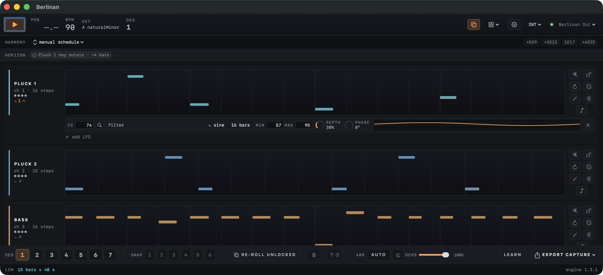

Berlinan
A generative MIDI sequencer for macOS in the Berlin School style of 1970s Tangerine Dream and Klaus Schulze. It plays several short melodic loops that repeat, slowly shift against each other and change only a little at a time.

It follows the rules of the genre
The engine follows a style manual compiled from about 225 video lessons by a Berlin School practitioner (the Synth Seeker YouTube channel). Four of its laws do most of the work.
- Repetition earns change
- A pattern plays verbatim several times before it may mutate, and every mutation has to earn its place again.
- One scale for everyone
- All voices share a scale. Transposition moves by scale degree, so the whole ensemble changes harmony together.
- Phasing, not randomness
- Voices run loops of different lengths and drift against each other. That slow shifting is one of the genre's signature effects.
- Change on the bar
- Nothing is left to chance note by note, and there is no swing. Changes are planned and arrive at the next bar or at the end of a voice's loop, so the groove stays steady.
It plays your synths
Berlinan is a MIDI instrument, not a DAW. Point Ableton Live tracks at its virtual output Berlinan Out, or pick a connected MIDI device and play hardware synths directly. Audio never passes through it.
INT Berlinan is the clock master.
EXT It follows MIDI clock from Live or a hardware sequencer.
LINK Ableton Link over your network, tempo and downbeat locked both ways.
- Pluck 1ch 1
- Pluck 2ch 2
- Bassch 3
- Padch 4
- Leadch 5
- Heartbeatch 10
Made for playing live
Press play and an ensemble starts immediately, from a fresh seed every session. From there, every move is one press and lands on the next bar.
- Degree buttonsMove the whole ensemble to another scale degree.
- The B-partA contrasting second section in one press: a new chord progression and a new bass line.
- Arranger autopilotBuilds a piece voice by voice, varies it, returns the theme and ends it. It runs on its own; you can override any step.
- Density and ambient modeThin out or fill the whole mix, or slow changes down to about one a minute.
- Melody extractionPulls a few accented notes out of a sequence and grows them into a lead line.
- ScenesSlowly change your synths’ sound, for example open the filter, over eight bars with one click.
- CC LFOsLet any knob of your synth breathe over 1 to 64 bars, live. Find its CC number in a list of more than 400 instruments from midi.guide.
- CaptureEvery play-to-stop pass is kept as a take. Name your best ones, save them as multitrack MIDI files or drag them straight into Live.
- MIDI learnMap play, degrees, new seed and snapshots to your controller and leave the laptop alone.
Get Berlinan
Download
The disk image is signed and notarized by Apple, so it opens without security warnings. Drag Berlinan to Applications and press play.
The manual: every control explained, with marked screenshots.
Build from source
Berlinan is free software under the GPL 2.0 or later. You need the Xcode command line tools; no Xcode project is involved.
git clone --recursive https://github.com/jiripisa/berlinan.git
cd berlinan
./run.sh